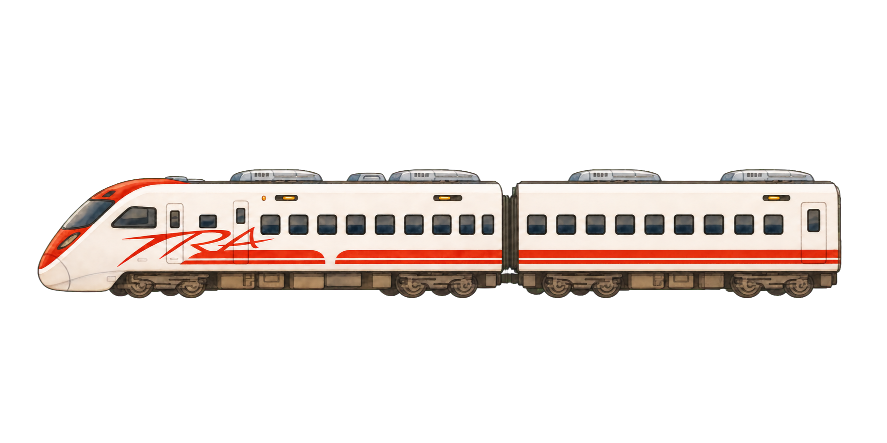

12
3
6
9

🎉 抵達目的地！
按 A／空白鍵或點這裡，揭曉下一個目的地
下一個目的地
按 A／空白鍵或點這裡，繼續旅程
🚉 到站動畫模擬 v1.9｜雙節離場版
以正式遊戲 v2.31／ui-v1.66.js 為流程基準：雙節列車進站停靠；按下揭曉後，上方顯示下一站，列車同時由慢至快向左駛出。參數可直接寫入遊戲已載入的 arrival_settings.js，供日後正式接入共用。
到站載具（劇場版雙節列車，不套用玩家顏色）
慢車
快車
普悠瑪
高鐵
停靠位置微調
寬度
150%
停靠 right
-75%
底部 bottom
-110%
進站秒數
3.8s
離場 right
115%
離場秒數
3.4s
即時時鐘（劇場背景對位）
左右
49.9%
上下
15.9%
大小
17%
時鐘回復劇場背景預設值
小朋友（可新增、切換造型、調整位置）
「左右」「高低」是佔畫面寬／高的百分比；「大小」是圖片寬度佔畫面寬度的百分比，數字愈大愈靠前／愈大隻。設定會自動保存於此瀏覽器。
➕ 新增小朋友
抵達文字（🎉 抵達目的地！／副標）
上下
22%
左右
74%
大小
1x
抵達文字回復預設值
小朋友／文字／列車共用設定檔
存檔會直接寫進 game-web/arrival_settings.js，內容包含 kids、title、trains 與 flow。正式遊戲已載入這個檔案，現階段會忽略尚未接入的列車欄位；日後加入離場動畫時直接讀同一份參數，不必再抄寫。第一次存檔會請你選擇含有 game-web 的專案資料夾。
📂 開啟設定檔
💾 寫入共用 arrival_settings.js
↻ 重新播放
回復本車預設值
選擇設定檔位置
下載目前設定檔
參數已自動保存於此瀏覽器。選擇一次檔案位置後，可同步自動覆寫文字檔。